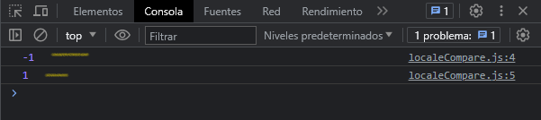

Los nuevos argumentos locales y options permiten a las aplicaciones especificar el idioma cuyo orden alfabético se debe usar y configurar el comportamiento de la función.
Veamos un ejemplo:
let inicio = "abc"
let fin = "xyz"
console.log(inicio.localeCompare(fin))
console.log(fin.localeCompare(inicio))
Definimos dos variables para comparar una con otra, para comparar cual va antes o cual va después. En ambos casos nos devolverá un valor, nos devolverá un valor negativo si el valor referencia va antes del valor que estamos comparando. Nos devolverá un valor positivo si el valor referencia va después del valor que estamos comparando.
